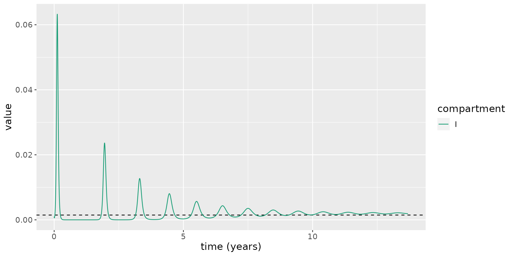
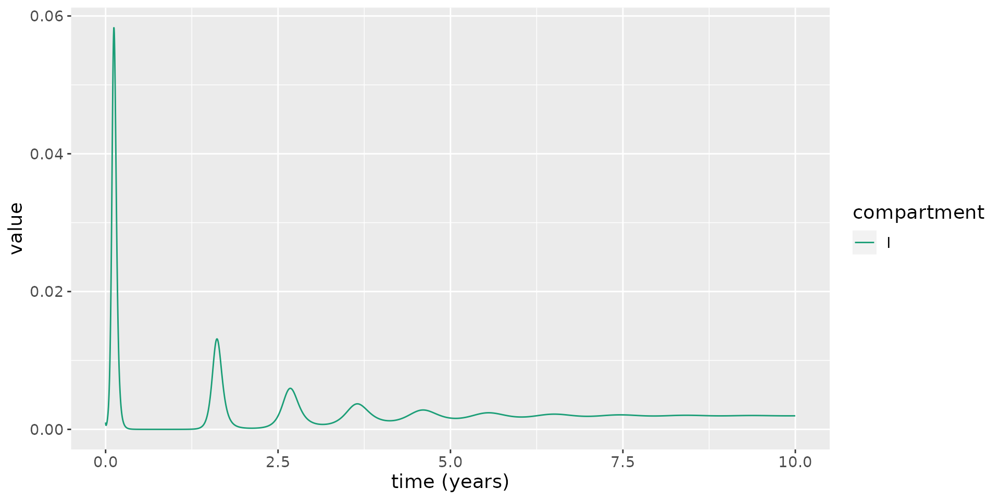

Births and natural deaths and waning natural immunity
Idil Cazimoglu and Ben Lambert
SEIRD_BD.RmdIntroduction
As the SARS-CoV-2 virus becomes endemic, focus shifts from short-term control of the current epidemic wave to learning to live with the virus long-term. Over longer timescales, births and natural deaths can affect the ability of an infectious disease to invade a population. If there is no maternal immunity inherited by newborns, we may assume they are susceptible to infection. This replenishment of the susceptible population can, over long periods, allow an infectious disease to re-invade a population, and an epidemic wave may reoccur.
In the basic SEIRD model, an individual who has been exposed to a pathogen and “recovered” from infection is assumed to be immune to reinfection. Immunity to reinfection is known to wane in the time period following when individuals receive vaccinations (Goldberg et al. 2021). Natural immunity resultant from previous infection with SARS-CoV-2 has been found to have a stronger and longer-lasting protection against the Delta version of the virus than the Pfizer BNT162b2 two-dose vaccine (Gazit et al. 2021), although it is widely thought that the protection conferred by infection also wanes over time.
Waning immunity and births have a similar impact on transmission dynamics as both processes lead to replenishment of susceptible individuals. Though the rate at which they do so is different – for COVID-19, waning immunity has a much stronger effect than births.
In this notebook, we investigate first how the dynamics of infection throughout the population are affected by births and natural deaths. We then extend the model further with waning natural immunity.
Births and natural death
To begin, we ignore waning natural immunity and extend the basic SEIRD model to include births and natural death terms.
\[\frac{\text{d}S}{\text{d}t} = \lambda -\beta S I - \nu S,\] \[\frac{\text{d}E}{\text{d}t} = \beta S I - (\kappa + \nu) E,\] \[\frac{\text{d}I}{\text{d}t} = \kappa E - (\gamma + \mu + \nu) I,\] \[\frac{\text{d}R}{\text{d}t} = \gamma I - \nu R,\] \[\frac{\text{d}D}{\text{d}t} = \mu I + \nu (S + E + I + R).\]
Here, \(\lambda\geq 0\) represents the rate of birth into the population. The effect of this term is to increase the population size over time. \(\nu > 0\) represents the rate of death due to causes unrelated to COVID-19.
The system is closed by specifying the initial conditions \[S(0) = S_0,\ E(0) = E_0,\ I(0) = I_0,\ R(0) = r_0,\ D(0) = 0.\]
Note, we have used \(r_0\) here to avoid ambiguity with the basic reproduction number.
If we ignore death due to COVID-19 infection (i.e. set \(\mu=0\)), the evolution of the population size, \(N(t)=S(t)+E(t)+I(t)+R(t)\) is given by:
\[\begin{equation} \frac{\text{d}N}{\text{d}t} = \lambda - \nu N. \end{equation}\]
which has a steady state: \(N^* = \lambda / \nu\). Assuming the initial population size, \(N(0)\), is below this, it grows at an ever-declining rate towards this steady state:
\[\begin{equation} N(t) = N^* - (N^* - N(0)) \exp(-\nu t). \end{equation}\]
Basic reproduction number
In order to set COVID-19-relevant parameter ranges for this model, we use the basic reproduction number \(R_0\), which can be derived in similar fashion to that for the basic SEIRD model. A slight difference here is that exposed individuals can die before they pass on infection. So, \(R_0\) for the SEIRD_BD model is given by:
\[\begin{align} \begin{split} R_0 = &\text{ # infected per unit time by an infectious indiv. } \times\\ &\text{ prob. of surviving latent period } \times\\ &\text{ av. duration of infectiousness}, \end{split} \end{align}\]
where we have assumed the entire population are susceptible, in line with the definition of the basic reproduction number (Diekmann, Heesterbeek, and Metz 1990). This results in an expression:
\[\begin{equation} R_0 = \beta \times \frac{\kappa}{\kappa + \nu} \times \frac{1}{\gamma + \mu + \nu}, \end{equation}\]
where \(\kappa/(\kappa+\nu)\) is the probability of surviving the latent period and, since infectious individuals may recover (at rate \(\gamma\)), die due to COVID-19 infection (at rate \(\mu\)), or due to non-COVID-19 causes (at rate \(\nu\)), the average duration spent in this compartment is \(1/(\gamma + \mu + \nu)\).
Where we note that, if \(\nu=0\), the basic reproduction reduces to that for the basic SEIRD model: \(R_0 = \beta / (\gamma + \mu)\). Indeed, for COVID-19 transmission, the rate of natural death is much lower than the rate of becoming infectious or the COVID-19-induced death rate, so the reproduction numbers of the basic SEIRD model and that above will be virtually indistinguishable.
Multiple epidemic waves and an endemic steady state
Let’s create an SEIRD_BD model.
model <- SEIRD_BD()And we are going to start with 0.1% infectious individuals and everyone else is susceptible.
initial_conditions(model) <- list(S0=0.999, E0=0, I0=0.001, R0=0)We next give it transmission parameters. Here, we follow suit with the same parameter values as in Vignette("SEIRD") for \(\mu\), \(\kappa\) and \(\gamma\). We start by allowing no natural death, by setting \(\nu=0\). To illustrate an implication of replenishment of susceptibles, we include an unnaturally high birth rate where newborns account for 0.1% of the population each day at beginning of simulations. Finally, we set \(\beta\) so that \(R_0=2.4\) as in report 9 by Imperial College (Ferguson et al. 2020).
kappa <- 1 / 5.5
zeta <- 1 / 2
ifr <- 0.0066
gamma <- zeta * (1 - ifr)
mu <- zeta * ifr
nu <- 0
lambda <- 0.001
delta <- 0 # waning natural immunity term -- to explore later
R0_target <- 2.4
beta <- R0_target * (kappa + nu) / kappa * (gamma + mu + nu)
transmission_parameters(model) <- list(
beta=beta,
kappa=kappa,
gamma=gamma,
mu=mu,
lambda=lambda,
nu=nu,
delta=delta)We now run the model using these parameters and plot the infectious proportion over time. This plot illustrates repeated epidemic waves, each representing a re-invasion of the pathogen through the population.
# run model
results <- run(model, times = seq(0, 5000, 1))
# extract states
states <- results$states
# plot infectious
states %>%
filter(compartment == "I") %>%
ggplot(aes(x = time / 365.25, y = value)) +
geom_line(aes(color = compartment)) +
scale_color_brewer(palette = "Dark2") +
labs(x = "time (years)", y = "value") +
theme(text = element_text(size = 14))To see how this oscillatory behaviour occurs, we overlay the time-varying reproduction number, \(R_t = R_0 S(t)\), on the same plot.
# calculate R_0
R_0 <- R0(model)
# plot: magnifying the infectious numbers so they are visible
states %>%
mutate(value=if_else(compartment=="S", R_0 * value, value)) %>%
mutate(compartment=as.character(compartment)) %>%
mutate(compartment=if_else(compartment=="S", "Rt", compartment)) %>%
group_by(compartment) %>%
mutate(value=if_else(compartment=="I", value / max(value), value)) %>%
ungroup() %>%
filter(compartment %in% c("Rt", "I")) %>%
ggplot(aes(x = time / 365.25, y = value)) +
geom_hline(yintercept = 1, linetype=2) +
geom_line(aes(color = compartment)) +
scale_color_brewer(palette = "Dark2") +
labs(x = "time (years)", y = "value") +
theme(text = element_text(size = 14))This shows the new susceptibles born into the population lead \(R_t\) to increase over time, until, eventually, \(R_t>1\), and a new epidemic wave sweeps through the population. Over time, these waves occur more frequently and they become less marked.
Eventually \(R_t\rightarrow 1\), and an endemic equilibrium is reached, where a non-zero fraction of the population are infected. This is a notable difference from the SEIRD model, which does not permit an endemic steady state.
Steady states
To further explore the steady states of this system, we set the right-hand sides of the ordinary differential equations within the system to zero:
\[\lambda -\beta S I - \nu S=0\] \[\beta S I - (\kappa + \nu) E=0\] \[\kappa E - (\gamma + \mu + \nu) I=0\] \[\gamma I + \nu R=0.\] Solving these simultaneously yields two possible equilibria: one representing the disease-free steady state; another representing the case when the disease becomes endemic. The endemic steady states are given by:
\[\begin{align} S^* &= \frac{(\kappa +\nu ) (\gamma +\mu +\nu )}{\beta \kappa },\\ E^* &= \frac{\lambda }{\kappa +\nu }-\frac{\nu (\gamma +\mu +\nu )}{\beta \kappa },\\ I^* &= \frac{\kappa \lambda }{(\kappa +\nu ) (\gamma +\mu +\nu )}-\frac{\nu }{\beta },\\ R^* &= \frac{\gamma \kappa \lambda }{\nu (\kappa +\nu ) (\gamma +\mu +\nu )}-\frac{\gamma }{\beta }. \end{align}\]
For \(I^*>0\), we find the following condition:
\[\begin{equation} \beta >\frac{\nu (\kappa +\nu ) (\gamma +\mu +\nu )}{\kappa \lambda }. \end{equation}\]
For the previously simulated system, we calculate \(I^*\) and overlay this on the plot to illustrate the limiting behaviour of the system.
I_star = kappa * lambda / ((kappa + nu) * (gamma + kappa + nu)) - nu / beta
states %>%
filter(compartment == "I") %>%
ggplot(aes(x = time / 365.25, y = value)) +
geom_hline(yintercept = I_star, linetype=2) +
geom_line(aes(color = compartment)) +
scale_color_brewer(palette = "Dark2") +
labs(x = "time (years)", y = "value") +
theme(text = element_text(size = 14))
More realistic parameter values for COVID-19
The parameter values for \(\nu\) and \(\lambda\) considered thus far have been unrealistic. We now set these to more reasonable values for the UK. The average life expectancy of a female in the UK is 82.9 years for females and 79.0 years for males (ONS, n.d.): assuming equal numbers of each sex, the average life expectancy is 80.95 years. To determine \(\nu\), we calculate a per day mortality rate: \(\nu=1/(80.95 \times 365.25)=3.4\times 10^{-5}\) per day. In 2019, the UK experienced 712,680 births in a population of 66.8 million (ONS, n.d.). As a fraction, annual births then represent roughly 1% of the population. To determine \(\lambda\), we convert this to a daily rate resulting in \(\lambda=2.9 \times 10^{-5}\). We then use these parameter values to simulate the model.
# set parameter values
nu <- 1 / (80.95 * 365.25)
lambda <- 712680 / 66.8e6 / 365.25
beta <- R0_target * (kappa + nu) / kappa * (gamma + mu + nu)
transmission_parameters(model) <- list(
beta=beta,
kappa=kappa,
gamma=gamma,
mu=mu,
lambda=lambda,
nu=nu,
delta=delta)
# run model
results <- run(model, times = seq(0, 100 * 365.25, 1))
# extract states
states <- results$states
# plot infectious
states %>%
filter(compartment == "I") %>%
ggplot(aes(x = time / 365.25, y = value)) +
geom_line(aes(color = compartment)) +
scale_color_brewer(palette = "Dark2") +
labs(x = "time (years)", y = "value") +
theme(text = element_text(size = 14)) From this, we see that there is a second epidemic wave, but it takes nearly 100 years for it to occur! So, birth and natural death (in the UK, at least) appear not to play substantial roles in causing epidemic re-emergence.
From this, we see that there is a second epidemic wave, but it takes nearly 100 years for it to occur! So, birth and natural death (in the UK, at least) appear not to play substantial roles in causing epidemic re-emergence.
Waning natural immunity
We now explore how the dynamics are affected by the introduction of waning natural immunity. Vaccine efficacy is known to wane after a number of months for the vaccines developed thus far: for example, considering the BNT162b2 (Pfizer) vaccine, the rates of infection for those vaccinated six months ago are similar to those in vaccine-naive individuals (Goldberg et al. 2021). It appears that infection confers a protection against reinfection which remains strong up to around several months to a year post-infection (Leidi et al. 2021; Abu-Raddad et al. 2021; Gallais et al. 2021), but is also thought to eventually wane.
Here, to account for waning in natural immunity over time, we modify the \(S\) and \(R\) compartments to allow recovered individuals to become susceptible again:
\[\frac{\text{d}S}{\text{d}t} = \lambda + \delta R -\beta S I - \nu S,\] \[\frac{\text{d}R}{\text{d}t} = \gamma I - (\nu + \delta) R,\] where \(\delta\geq 0\) is the rate at which recovered individuals become once again susceptible.
Note, this model does not allow primary infection to affect the risk of severe disease, and thus disease-related death, upon reinfection, which may be unrealistic for COVID-19, where this risk may be lowered. But including this effect would not likely substantially affect dynamics of infections, which is our focus here.
To illustrate the impact of waning immunity to natural infection, we assume that the average duration of immunity to reinfection is 1.5 years. We then run simulations using the same parameters as above.
delta <- 1 / (1.5 * 365.25)
transmission_parameters(model) <- list(
beta=beta,
kappa=kappa,
gamma=gamma,
mu=mu,
lambda=lambda,
nu=nu,
delta=delta)
# run model
results <- run(model, times = seq(0, 10 * 365.25, 1))
# extract states
states <- results$states
# plot infectious
states %>%
filter(compartment == "I") %>%
ggplot(aes(x = time / 365.25, y = value)) +
geom_line(aes(color = compartment)) +
scale_color_brewer(palette = "Dark2") +
labs(x = "time (years)", y = "value") +
theme(text = element_text(size = 14))
This model illustrates reoccuring epidemic waves. Since the rate at which natural immunity to reinfection wanes is much faster the rate at which susceptibles are replenished due to birth, this leads to much more frequent epidemic waves.
This model, as for the model above with births and deaths but no waning immunity, also allows an endemic steady state:
\[S^* = \frac{(\kappa +\nu ) (\gamma +\mu +\nu )}{\beta \kappa },\]
\[E^* = \frac{(\nu +\delta ) (\gamma +\mu +\nu ) (\beta \kappa \lambda - \nu (\kappa +\nu ) (\gamma +\mu +\nu ))}{\beta \kappa (\gamma \nu (\kappa +\nu +\delta )+(\kappa +\nu ) (\mu +\nu ) (\nu +\delta ))},\]
\[ I^* = \frac{(\nu +\delta ) (\beta \kappa \lambda -\nu (\kappa +\nu ) (\gamma +\mu +\nu ))}{\beta (\gamma \nu (\kappa +\nu +\delta )+(\kappa +\nu ) (\mu +\nu ) (\nu +\delta ))},\]
\[ R^* = \frac{\beta \gamma \kappa \lambda -\gamma \nu (\kappa +\nu ) (\gamma +\mu +\nu )}{\beta (\gamma \nu (\kappa +\nu +\delta )+(\kappa +\nu ) (\mu +\nu ) (\nu +\delta ))}.\]
We now overlay \(I^*\) on the plot above, running the model for longer to illustrate the approach to equilibrium.
I_star <- (beta * kappa * lambda - nu * (kappa + nu) * (gamma + mu + nu)) * (nu + delta) / (beta * (kappa + nu) * (mu + nu) * (nu + delta) + gamma * nu * (kappa + nu + delta))
# run model
results <- run(model, times = seq(0, 100 * 365.25, 1))
# extract states
states <- results$states
# plot infectious
states %>%
filter(compartment == "I") %>%
ggplot(aes(x = time / 365.25, y = value)) +
geom_hline(yintercept = I_star, linetype=2) +
geom_line(aes(color = compartment)) +
scale_color_brewer(palette = "Dark2") +
labs(x = "time (years)", y = "value") +
theme(text = element_text(size = 14))With this model, we can determine the number of daily cases expected to arise at the endemic equilibrium:
\[\begin{equation} \frac{\text{d}C}{\text{d}t} = \beta S^* I^*, \end{equation}\]
where \(C\) represents cumulative case counts and \(S^*\) and \(I^*\) are constants. This implies new cases appearing each day given by:
\[\begin{equation} C(t+1) - C(t) = \beta S^* I^*. \end{equation}\]
For the parameters of the model, this implies roughly 46000 daily cases for the UK once we reach equilibrium – a huge number. We now determine the sensitivity of this case count to assumptions about the duration of waning immunity. To do so, we consider average durations of immunity to reinfection ranging from 4 months to 3 years. In each case, we calculate the number of daily cases at the endemic equilibrium.
# helper function
daily_cases <- function(delta) {
S_star <- (kappa + nu) * (gamma + mu + nu) / (beta * kappa)
cases <- beta * I_star * S_star
I_star <- (beta * kappa * lambda - nu * (kappa + nu) * (gamma + mu + nu)) * (nu + delta) / (beta * (kappa + nu) * (mu + nu) * (nu + delta) + gamma * nu * (kappa + nu + delta))
beta * S_star * I_star * 66.8e6
}
# sensitivity analysis
immunity_durations <- seq(1 / 3, 3, length.out=50)
deltas <- 1 / (365.25 * immunity_durations)
cases <- daily_cases(deltas)
df <- tibble(immunity_durations, cases)
df %>%
ggplot(aes(x=immunity_durations, y=cases)) +
geom_line() +
xlab("Average natural immunity to reinfection (years)") +
ylab("Daily endemic case counts")Over the range of durations surveyed, the minimum case counts was 28000 and maximum was 99000.
Whilst this model makes a number of simplifications, these simulations hint that interventions such as ongoing booster vaccination campaigns may be required to keep cases at a reasonable level.
References
Abu-Raddad, Laith J, Hiam Chemaitelly, Peter Coyle, Joel A Malek, Ayeda A Ahmed, Yasmin A Mohamoud, Shameem Younuskunju, et al. 2021. “SARS-Cov-2 Antibody-Positivity Protects Against Reinfection for at Least Seven Months with 95% Efficacy.” EClinicalMedicine 35: 100861.
Diekmann, Odo, JAP Heesterbeek, and Johan AJ Metz. 1990. “On the Definition and the Computation of the Basic Reproduction Ratio R0 in Models for Infectious Diseases in Heterogeneous Populations.” Journal of Mathematical Biology 28 (4): 365–82.
Ferguson, Neil, Daniel Laydon, Gemma Nedjati Gilani, Natsuko Imai, Kylie Ainslie, Marc Baguelin, Sangeeta Bhatia, et al. 2020. “Report 9: Impact of Non-Pharmaceutical Interventions (Npis) to Reduce Covid19 Mortality and Healthcare Demand.”
Gallais, Floriane, Pierre Gantner, Timothée Bruel, Aurélie Velay, Delphine Planas, Marie-Josée Wendling, Sophie Bayer, et al. 2021. “Evolution of Antibody Responses up to 13 Months After Sars-Cov-2 Infection and Risk of Reinfection.” EBioMedicine 71: 103561.
Gazit, Sivan, Roei Shlezinger, Galit Perez, Roni Lotan, Asaf Peretz, Amir Ben-Tov, Dani Cohen, Khitam Muhsen, Gabriel Chodick, and Tal Patalon. 2021. “Comparing Sars-Cov-2 Natural Immunity to Vaccine-Induced Immunity: Reinfections Versus Breakthrough Infections.” MedRxiv.
Goldberg, Yair, Micha Mandel, Yinon M Bar-On, Omri Bodenheimer, Laurence Freedman, Eric J Haas, Ron Milo, Sharon Alroy-Preis, Nachman Ash, and Amit Huppert. 2021. “Waning Immunity After the Bnt162b2 Vaccine in Israel.” New England Journal of Medicine 385 (24): e85.
Leidi, Antonio, Flora Koegler, Roxane Dumont, Richard Dubos, Marı́a-Eugenia Zaballa, Giovanni Piumatti, Matteo Coen, et al. 2021. “Risk of Reinfection After Seroconversion to Sars-Cov-2: A Population-Based Propensity-Score Matched Cohort Study.” medRxiv.
ONS. n.d. “National Life Tables ??? Life Expectancy in the Uk: 2018 to 2020.” {https://www.ons.gov.uk/peoplepopulationandcommunity/birthsdeathsandmarriages/lifeexpectancies/bulletins/nationallifetablesunitedkingdom/2018to2020}.
ONS. n.d. “Overview of the UK population: January 2021.” \url{https://www.ons.gov.uk/peoplepopulationandcommunity/populationandmigration/populationestimates/articles/overviewoftheukpopulation/january2021}.